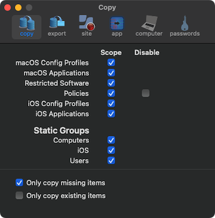
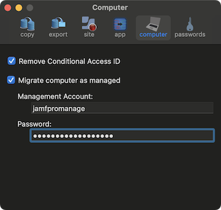
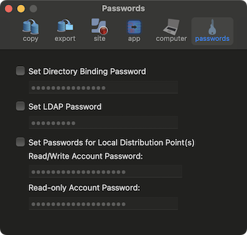
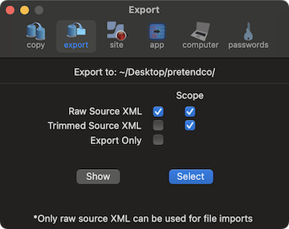

Note: Policies are listed along with the their ID. You'll see something like: policy name (ID)
Also, policies may have their dependencies check/migrated using the Migrate Dependencies button. Only 'top-level' dependencies are checked. i.e. if the scope is being migrated and contains nested computer groups or groups assigned to a site that doesn't exist on the destination server the policy migration will likely fail. Adding smart migrations is planned for other items.
When importing XML files they must be organized into folders that, for the most part, mirror their respective API nodes. i.e. computer XML files in a folder labeled computers, mobile devices in a folder called mobiledevices. Exceptions to this are group items, for example computer groups are split into a smartcomputergroups folder and staticcomputergroups folder. This is also how jamf-migrator exports files. Then when importing, select the folder that contains the API nodes we with to update. For example, if selecting files generated by exporting data with jamf-migrator we would select the folder called raw.
 Important:
Important: Trimmed XML files cannot be used as they are missing data required for the migration.
Preferences:
You can modify how some items are copied. The following items can be copied without any scope defined, leaving the existing scope on the destination server unchanged (if the item exists there already).
- macOS Configuration Profiles
- macOS Applications
- Restrictions
- Policies
- Mobile Device Configuration Profiles
- Mobile Device Applications
- Static Computer Groups
- Static Mobile Device Groups
- Static User Groups
In addition, Policies can be copied in a disabled state.

Options to export XML from the source server are also available.
- Raw Source XML gives you the XML from the source server before any modifications, like removing the id tag(s) and value(s).
- Trimmed Source XML give you the XML that is sent to the destination server.
- Save only saves the XML files and does not send them to the destination server.
- Save the object XML either with or without its scope. Unchecked removes the scope.
- Note: Neither Raw Source XML nor Save Only should be selected when File Import is selected.
By default files are saved to ~/Downloads/Jamf Migrator/, this can be changed. Within the Jamf Migrator folder (or whatever folder you've selected) a folder called raw and or trimmed will be created to store the objects. They will be saved with a folder named after the API endpoint they were exported from. The name of an individual file is formated as <name>-<id>.xml.
The number of concurrent API operations (from 1 to 5), sticky sessions (when available), forcing basic authentication, color scheme, and number of log files to retain can be configured.
Set the migrated computer as managed by defining credentials for the management accoount. If to option to migrate the computer as managed and no credentials are provided they will be set to jamfpromanage / changeM3!

Set a password for the service account associated with the following services; bind, ldap, and file sharing.

If you have several different bind, or ldap, or file shares configured the same password is applied to each account associated with a service.
Migration Summary:
- To get details on how many items were created/updated or failed to migrate type ⌘S, or select Show Summary under the File menu.
- Additional information about each count can be obtained by clicking on the number. For example, if we want to see a list of the 28 failed scripts, click on the 28.
If you have used jamf-migrator and saved passwords you will see the following after launching a new version.
If you'd like the new version to access existing credentials select the desired option.
Important:
- There are many dependencies (view here) between items, if they are not met, transfers fail. For example, if a policy is site specific the site must be migrated before the policy; if a script is assigned to a category the category must be migrated first.... If everything is migrated the order of sections is already taken care of, if you choose not to move some items that's where you can have issues.
- As a result it is best to start migrating items under the 'General' tab first. Items under macOS and iOS typically have some dependency on categories, network segments, sites...
Logging:
- Basic log information is written to the following folder: ~/Library/Containers/com.jamf.jamf-migrator/Data/Library/Logs/jamf-migrator/. The log directory can easily be accessed by typing ⌘L or select Show Logs under View in the menu bar.
- More detailed logging can be captured by launching the application through Terminal using the '-debug' switch. If the application is located in /Applications:
/Applications/jamf-migrator.app/Contents/MacOS/jamf-migrator -debug
The application may also be used to clear information from a server. To place the application in removal mode run the following command in Terminal after the application has been launched:
- touch ~/Library/Containers/com.jamf.jamf-migrator/Data/Library/Application\ Support/jamf-migrator/delete
You can also toggle the mode by selecting View --> Toggle Mode from the menu bar, or using ⌘D.
The application will alert you that data will be removed by displaying -- Removing -- rather than Migrate. Data is removed from the destination server. Once you hit 'Go!' items will get removed and once the process finishes the 'delete' file is removed and the application is back in migration mode.
Note, source server credentials are not required (and are ignored) when removing items from the destination server. Also, dependencies play a role in deletions/removals as they do with migrations. For example, a site can not be deleted if it contains, say, users and users can't be deleted if they are associated with a device.
When using the Selective tab while doing removals, the list of available objects is greyed out once all the selected items have been removed. If you wish to remove additional items either touch the 'delete' file or hit ⌘D, the list will be re-enabled.
You can export object XML data before deleting it by selecting raw source XML from the export preferences. Be aware some data, in particular security related data, like passwords for distribution points or passwords for LDAP connections, will not be exported. However passwords used in configuration profiles, WiFi passwords for example, will be exported and be displayed in plain text within the XML file.

Command Line Usage
Help is available by running:
- /path/to/jamf-migrator.app/Contents/MacOS/jamf-migrator -help
Running the following in Terminal will export all objects (full XML) that can be migrated:
- /path/to/jamf-migrator.app/Contents/MacOS/jamf-migrator -source your.jamfPro.fqdn -export -objects allobjects
Before running an export via command line at least one export from the app must be manually run saving the source username and password.
To migrate object(s) using the command line, something like the following can be used:
- /path/to/jamf-migrator.app/Contents/MacOS/jamf-migrator -source your.jamfPro.fqdn -destination dest.jamfPro.fqdn -objects categories,buildings -migrate
If importing files, the import folder must be selected in the UI before the command line can be successfully run.
To set an ldap id of 3 on jamf user accounts and force that id (also converts local accounts to ldap) use the following:
- /path/to/jamf-migrator.app/Contents/MacOS/jamf-migrator -ldapid 3 -forceldapid true
This can also be accomplished using the UI by launching jamf-migrator from Terminal:
- /path/to/jamf-migrator.app/Contents/MacOS/jamf-migrator -ldapid 3 -forceldapid true
It's best to start on the General tab, then move to either macOS or iOS. Within each tab migrate from top to bottom, using the lists below. Note, if you select multiple/all items then will migrate in the proper order.
General:
- Buildings: None
- Departments: None
- Categories: None
- Sites: None
- Jamf Users: LDAP Servers, Jamf Groups, Sites
- Jamf Groups: LDAP Servers, Sites
- Network Segments: File Shares, Buildings, Departments
- LDAP Servers: None
- User Extension Attributes: None
- Users: User Extension Attributes, Photo (cleared)
- Advanced User Searches: User Extension Attributes
- Smart User Groups: Sites, User Extension Attributes, Users (cleared)
- Static User Groups: Sites, Users
macOS:
- Mac App Store Apps: Computers, Users, Groups, Buildings, Departments, Network Segments
- Computers: Users, File Shares, Software Update Servers, Sites, location attributes (cleared), peripherals, Extension Attributes, Computer Group Membership (cleared), iphones (cleared), configuration profiles (cleared)
- Configuration Profiles: Sites, Categories, Computers, Buildings, Departments, Computer Groups, Jamf Users, Users, User Groups, Network Segments, iBeacons
- Policies: Categories, Network Segments, iBeacons, Distribution Points, Software Update Servers, Sites, Buildings, Departments, Users, User Groups, Computers, Computer Groups, Self Service Icon (cleared), Packages, Scripts, Printers, Dock Items, Directory Bindings
- Advanced Computer Searches: Extension Attributes, Sites, Computers (cleared)
- Scripts: Categories
- Smart Computer Groups: Sites, Extension Attributes, Computers (cleared)
- Static Computer Groups: Sites, Computers
- Directory Bindings: None
- Restricted Software: Computers, Computer Groups, Buildings, Departments
- Extension Attributes: None
- Packages: Categories
- Printers: Categories
- Dock Items: None
- Software Update Servers (SUS): None
- File Shares (AFP/SMB): Failover Distribution Point
iOS:
- iOS Devices: Sites, Username, Department, Building, Extension Attributes, Mobile Device Groups (cleared), Configuration Profiles (cleared)
- Configuration Profiles: Sites, Categories, Scope is cleared which includes: mobile devices, buildings, departments, jss users, jss user groups, network segments, ibeacons
- Mobile Device Apps: Mobile Devices, Users, Groups, Buildings, Departments, Network Segments
- Advanced iOS Searches: Sites, Extension Attributes, Mobile Devices (cleared)
- Extension Attributes: None
- Smart Groups: Sites, Extension Attributes, Mobile Devices (cleared)
- Static Groups: Sites, Mobile Devices
Some attributes are cleared during migration either because the attribute is not accesible through the API, photos of users for example, or the attribute is repopulated during a recon, like smart goup membership.